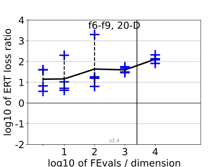
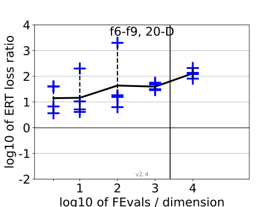

{kind=link}
{kind=link}
{kind=link}
{kind=link}
 
All functions in 5-D and 20-D
f1–f24 in 5-D, maxFE/D=10000
| #FEs/D | best | 10 % | 25 % | med | 75 % | 90 % |
|---|---|---|---|---|---|---|
| RLUS/D | 1e4 | 1e4 | 1e4 | 1e4 | 1e4 | 1e4 |
| 2 | 1.2 | 1.8 | 2.5 | 3.3 | 5.0 | 10 |
| 10 | 1.3 | 2.3 | 3.3 | 3.7 | 5.0 | 11 |
| 100 | 2.6 | 4.1 | 6.8 | 9.7 | 17 | 88 |
| 1e3 | 3.9 | 7.1 | 13 | 23 | 50 | 1.4e2 |
| 1e4 | 3.8 | 13 | 23 | 53 | 2.4e2 | 3.6e2 |
| 1e5 | 2.1 | 16 | 31 | 1.1e2 | 1.4e3 | 2.0e3 |
f1–f24 in 20-D, maxFE/D=2500
| #FEs/D | best | 10 % | 25 % | med | 75 % | 90 % |
|---|---|---|---|---|---|---|
| RLUS/D | 2e3 | 2e3 | 2e3 | 2e3 | 2e3 | 2e3 |
| 2 | 0.85 | 1.6 | 7.3 | 40 | 40 | 40 |
| 10 | 1.4 | 4.8 | 5.7 | 8.0 | 26 | 2.0e2 |
| 100 | 4.7 | 6.5 | 9.6 | 19 | 40 | 2.7e2 |
| 1e3 | 4.6 | 12 | 30 | 43 | 68 | 4.7e2 |
| 1e4 | 4.3 | 35 | 95 | 1.7e2 | 2.4e2 | 6.5e2 |
Separable functions in 5-D and 20-D
Misc. moderate functions in 5-D and 20-D
Ill-conditioned functions in 5-D and 20-D
Multi-modal functions in 5-D and 20-D
Weak structure functions in 5-D and 20-D
ERT loss ratios (see the previous figure for details). Each cross (+) represents a single function, the line is the geometric mean.{kind=link}
{kind=link}
{kind=link}
{kind=link}
{kind=link}
{kind=link}
{kind=link}